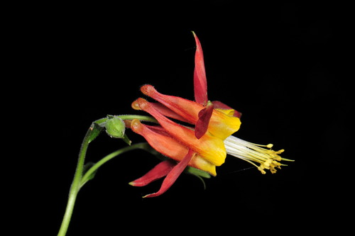

Orange-banded Bumble Bee
Bombus appositus native bee
A long-tongued social bumble bee. Nests on the surface or underground. Forages on Agastache, Cirsium, Delphinium, Gentiana and others.
60 documented plant relationships.
sips nectar at
 Alberta PenstemonPenstemon albertinus
Alberta PenstemonPenstemon albertinus Leslie Seaton, some rights reserved (CC BY)") BalsamrootBalsamorhiza sagittataBee Balm (Wild Bergamot)Monarda fistulosa
BalsamrootBalsamorhiza sagittataBee Balm (Wild Bergamot)Monarda fistulosa Eugene Popov, some rights reserved (CC BY), uploaded by Eugene Popov") Birch-leaved SpireaSpiraea betulifolia
Birch-leaved SpireaSpiraea betulifolia Jim Morefield, some rights reserved (CC BY), uploaded by Jim Morefield") Canada Milk VetchAstragalus canadensis
Canada Milk VetchAstragalus canadensis J Brew, some rights reserved (CC BY-SA), uploaded by J Brew") Common PaintbrushCastilleja miniata
Common PaintbrushCastilleja miniata tomasz przechlewski, some rights reserved (CC BY)") Common SnowberrySymphoricarpos albus
Common SnowberrySymphoricarpos albus KENPEI, some rights reserved (CC BY)") Common SunflowerHelianthus annuus
Common SunflowerHelianthus annuus Matt Lavin, some rights reserved (CC BY-SA)") Dotted BlazingstarLiatris punctataEarly Yellow OxytropisOxytropis sericea
Dotted BlazingstarLiatris punctataEarly Yellow OxytropisOxytropis sericea Douglas Goldman, some rights reserved (CC BY-SA), uploaded by Douglas Goldman") FireweedChamaenerion angustifoliumFuzzy-tongue PenstemonPenstemon eriantherus
FireweedChamaenerion angustifoliumFuzzy-tongue PenstemonPenstemon eriantherus Matt Lavin, some rights reserved (CC BY-SA)") Golden BeanThermopsis rhombifolia
Golden BeanThermopsis rhombifolia peganum, some rights reserved (CC BY-SA)") Golden Currant (Buffalo Currant)Ribes aureum
Golden Currant (Buffalo Currant)Ribes aureum Andreas Stiller, some rights reserved (CC BY), uploaded by Andreas Stiller") Late GoldenrodSolidago gigantea
Late GoldenrodSolidago gigantea Matt Lavin, some rights reserved (CC BY)") Mountain GentianGentiana calycosa
Mountain GentianGentiana calycosa Caleb Catto, some rights reserved (CC BY), uploaded by Caleb Catto") Pale AgoserisAgoseris glauca
Pale AgoserisAgoseris glauca Bob Walker, some rights reserved (CC BY), uploaded by Bob Walker") Pink Monkey FlowerErythranthe lewisii
Pink Monkey FlowerErythranthe lewisii Alan Rockefeller, some rights reserved (CC BY), uploaded by Alan Rockefeller") Pink SpireaSpiraea douglasii
Pink SpireaSpiraea douglasii Matt Lavin, some rights reserved (CC BY-SA)") Plains WormwoodArtemisia campestris
Plains WormwoodArtemisia campestris Cesar Ormazabal, some rights reserved (CC BY), uploaded by Cesar Ormazabal") Prairie GentianGentiana affinisPrairie GoldenrodSolidago missouriensis
Prairie GentianGentiana affinisPrairie GoldenrodSolidago missouriensis Joshua Mayer, some rights reserved (CC BY-SA)") Prairie RoseRosa arkansanaPrairie ThistleCirsium flodmaniiPrairie TurnipPediomelum esculentum
Prairie RoseRosa arkansanaPrairie ThistleCirsium flodmaniiPrairie TurnipPediomelum esculentum Tom Norton, some rights reserved (CC BY), uploaded by Tom Norton") Prickly Wild RoseRosa acicularis
Prickly Wild RoseRosa acicularis Matt Lavin, some rights reserved (CC BY-SA)") RabbitbrushEricameria nauseosa
RabbitbrushEricameria nauseosa
Red ColumbineAquilegia formosaRound-leaved AlumrootHeuchera cylindrica Sam Kieschnick, some rights reserved (CC BY), uploaded by Sam Kieschnick") Saskatoon BerryAmelanchier alnifolia
Saskatoon BerryAmelanchier alnifolia Douglas Goldman, some rights reserved (CC BY-SA), uploaded by Douglas Goldman") Self-healPrunella vulgaris
Self-healPrunella vulgaris Fluff Berger, some rights reserved (CC BY-SA), uploaded by Fluff Berger") Showy FleabaneErigeron speciosus
Showy FleabaneErigeron speciosus Douglas Goldman, some rights reserved (CC BY-SA), uploaded by Douglas Goldman") Showy MilkweedAsclepias speciosa
Showy MilkweedAsclepias speciosa Jason Alexander, some rights reserved (CC BY), uploaded by Jason Alexander") Slender Blue BeardtonguePenstemon procerus
Slender Blue BeardtonguePenstemon procerus Slender Cinquefoil (Graceful Cinquefoil)Potentilla gracilis
Slender Cinquefoil (Graceful Cinquefoil)Potentilla gracilis Matt Lavin, some rights reserved (CC BY-SA)") Smooth Blue BeardtonguePenstemon nitidus
Smooth Blue BeardtonguePenstemon nitidus gwt2102, some rights reserved (CC BY)") Spreading DogbaneApocynum androsaemifolium
Spreading DogbaneApocynum androsaemifolium Sticky Purple GeraniumGeranium viscosissimum
Sticky Purple GeraniumGeranium viscosissimum Kate, some rights reserved (CC BY), uploaded by Kate") Sulphur HedysarumHedysarum sulphurescens
Sulphur HedysarumHedysarum sulphurescens 2007 Dianne Fristrom, some rights reserved (CC BY-SA)") Tall LarkspurDelphinium glaucum
Tall LarkspurDelphinium glaucum Mary Krieger, some rights reserved (CC BY), uploaded by Mary Krieger") Western SnowberrySymphoricarpos occidentalis
Western SnowberrySymphoricarpos occidentalis White GeraniumGeranium richardsonii
White GeraniumGeranium richardsonii tzeducation, some rights reserved (CC BY), uploaded by tzeducation") Wild BergamotMonarda fistulosa
Wild BergamotMonarda fistulosa Pohled 111, some rights reserved (CC BY-SA)") Wild ChivesAllium schoenoprasum
Wild ChivesAllium schoenoprasum Andrea Romero, some rights reserved (CC BY), uploaded by Andrea Romero") Wild VetchVicia americana
Wild VetchVicia americana Alison Northup, some rights reserved (CC BY), uploaded by Alison Northup") Wood Betony (Bracted Lousewort)Pedicularis bracteosa
Wood Betony (Bracted Lousewort)Pedicularis bracteosa J Brew, some rights reserved (CC BY-SA), uploaded by J Brew") Yellow BeardtonguePenstemon confertus
Yellow BeardtonguePenstemon confertus Matt Lavin, some rights reserved (CC BY-SA)") Yellow PucoonLithospermum ruderale
Yellow PucoonLithospermum ruderale aarongunnar, some rights reserved (CC BY), uploaded by aarongunnar") Yellow-flowered LocoweedOxytropis campestris
Yellow-flowered LocoweedOxytropis campestrisgathers pollen at
Bee Balm (Wild Bergamot)Monarda fistulosaFireweedChamaenerion angustifolium Hooded Ladies' TressesSpiranthes romanzoffiana
Hooded Ladies' TressesSpiranthes romanzoffiana Justin Meissen, some rights reserved (CC BY-SA)") Lilac PenstemonPenstemon gracilisPrickly Wild RoseRosa acicularisPurple Prairie CloverDalea purpureaSelf-healPrunella vulgaris
Lilac PenstemonPenstemon gracilisPrickly Wild RoseRosa acicularisPurple Prairie CloverDalea purpureaSelf-healPrunella vulgaris David Anderson, some rights reserved (CC BY), uploaded by David Anderson") Silky LupineLupinus sericeusTall LarkspurDelphinium glaucum
Silky LupineLupinus sericeusTall LarkspurDelphinium glaucum Esben Kjaer, some rights reserved (CC BY), uploaded by Esben Kjaer") White Prairie CloverDalea candidaWild BergamotMonarda fistulosa
White Prairie CloverDalea candidaWild BergamotMonarda fistulosa
FireweedChamaenerion angustifoliumHooded Ladies' TressesSpiranthes romanzoffianaLilac PenstemonPenstemon gracilisPrickly Wild RoseRosa acicularisPurple Prairie CloverDalea purpureaSelf-healPrunella vulgarisSilky LupineLupinus sericeusTall LarkspurDelphinium glaucumWhite Prairie CloverDalea candidaWild BergamotMonarda fistulosa